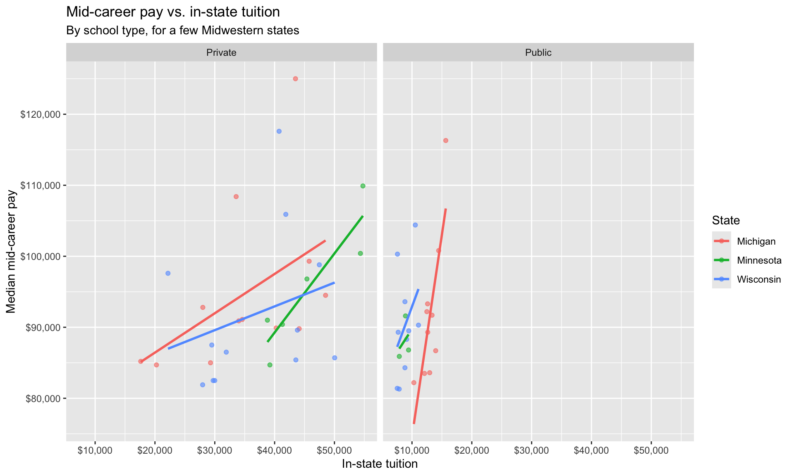

01: College Costs & Career Pay
Getting started
You should open this document in RStudio. To do so:
- Either open your local RStudio program or navigate to <maize.mathcs.carleton.edu> in your browser and log in.
- Go to file –> New file –> Quarto document … –> “Create empty document”. This should open a new .qmd file in your Rstudio session. Delete everything in this file so that you have a totally blank document.
- Next, we need to copy this template into your new quarto file.
- come back to this page and click the “code” button at the top of the page.
- Click the “copy” symbol in the upper right corner of the popup file
- Navigate back to your empty .qmd file and “paste” the text there
- You should now be able to see this document in your own session, and you can run code and edit it as you need to! Make sure to save it in your Stat220 “activities” folder.
Introduction
Which colleges cost the most, and does a higher price tag come with higher pay after graduation? Does that relationship look different at public schools versus private schools, or in different parts of the country? Answering these questions (at a high level) is the focus of this analysis.
Packages
We will use the tidyverse and scales packages for data wrangling and visualization, and the DT package for interactive display of tabular output.
Data
The data we’re using come from a TidyTuesday data set on college tuition and pay, originally collected by TuitionTracker.org (tuition costs) and PayScale’s College ROI Report (career salaries). In the chunk below we read in both files directly from the web and join them into a single data set to help you get started with the analysis.
tuition <- read_csv("https://raw.githubusercontent.com/rfordatascience/tidytuesday/master/data/2020/2020-03-10/tuition_cost.csv")
salary <- read_csv("https://raw.githubusercontent.com/rfordatascience/tidytuesday/master/data/2020/2020-03-10/salary_potential.csv")
college_pay <- tuition %>%
inner_join(salary, by = "name")Cost and career pay, by school type
Let’s create a data visualization that displays how in-state tuition relates to graduates’ mid-career pay for schools in a few states, and see whether that relationship looks similar at public and private schools.
We can easily change which states are being plotted by changing which states the code below filters for. Note that the state name should be spelled and capitalized exactly the same way as it appears in the data (e.g. "Minnesota", not "MN"). See the Appendix for a list of the schools (and states) in the data.
college_pay %>%
filter(state %in% c("Minnesota", "Wisconsin", "Michigan")) %>%
ggplot(mapping = aes(x = in_state_tuition, y = mid_career_pay, color = state)) +
geom_point(alpha = 0.6) +
geom_smooth(method = "lm", se = FALSE) +
facet_wrap(~type) +
scale_x_continuous(labels = dollar) +
scale_y_continuous(labels = dollar) +
labs(
title = "Mid-career pay vs. in-state tuition",
subtitle = "By school type, for a few Midwestern states",
x = "In-state tuition",
y = "Median mid-career pay",
color = "State"
)
Curious about your own school? Try filtering to a single school by name instead of a state, e.g. college_pay %>% filter(name == "Carleton College").
References
- TidyTuesday (2020-03-10). “College tuition, diversity, and pay”.
- Tuition data originally collected by TuitionTracker.org, based on U.S. Department of Education College Scorecard data.
- Salary data originally collected by PayScale’s College ROI Report.
Appendix
Below is a list of schools (and their states and type) in the data set: